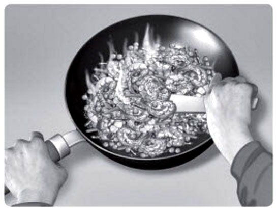
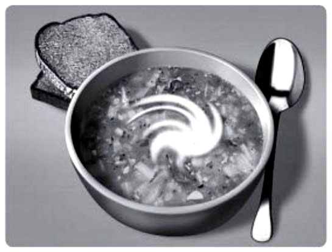

1 ……………………….
2 egg ……………………….

3 prawn ……………………….
4 cherry ……………………….

5 vegetable …………………

6 chicken ……………………….
1 ……………………….
2 egg ……………………….
3 prawn ……………………….
4 cherry ……………………….
5 vegetable …………………
6 chicken ……………………….
……………………………………, ……………………………………
two types of salad or sandwich.
……………………………………, ……………………………………
two types of soup or pie.
……………………………………, ……………………………………
your own answers
In a listening task, you sometimes need to identify the context of a conversation. The context is implied, not started, so you have to listen for clues. The information you need may be:
Woman I think we're early. Is anyone else there?
Man We aren't early. The invitation said dinner at 8.00. It's eight o'clock now.
W But I can't see anyone we know in there. Look through the window. It's empty.
M Hang on. Have you got the invitation with you?
W No, but I'm sure it said 8 o'clock on Friday 15th.
M I know. But did it say Marco's Italian or Mario's Italian restaurant?
W Hmm. Good question. This is Mario's.
M Yes. They might be at Marco's. I'll phone Harry and check.
W OK, Dad. Good idea.
1 Who is the woman talking to?
a a waiter
b the man she's having dinner with
c a man at the next table
2 Why is the woman unhappy with her food?
a It isn't what she ordered.
b It doesn't look very tasty.
c She can't eat it.
3 Where is the conversation taking place?
a at home
b in a restaurant
c in the town centre
4 What time is it, approximately?
a 7 p.m.
b 9 p.m.
c 11 p.m.
1 b 2 c 3 a 4 a
Man Great. Here comes our food. It looks delicious.
Woman I don't want this. It's got chicken in it.
M Don't you like chicken?
W I'm a vegetarian! I don't eat meat at all.
M Oh, I see. Why did you order it then?
W I didn't read the menu properly. I thought it was a mushroom pie – but it's chicken and mushroom.
M Oh dear. Well, I suppose …
W … we can swap?
M No. I don't like mushrooms. I was going to say, I suppose you can call the waiter back and order something different.
W Yeah, right. Thanks. OK.
Man What's for dinner?
Woman I don't know. We haven't got anything in the house. Shall I order a pizza?
M I don't fancy pizza. Let's go out.
W But we've just got in … and it's late.
M We could go to the Indian restaurant in the town centre. Come on, it's only five minutes' walk.
W OK. I quite fancy a curry, actually. Do we need to book?
M Probably not. They usually get busy after 9 p.m., but that gives us a couple of hours.
W OK, come on then. Let's go. I'm starving!